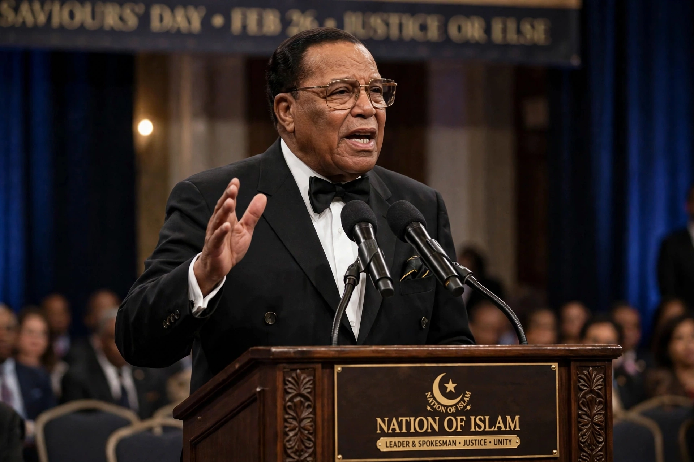

Louis Farrakhan (born Louis Eugene Walcott, 11 May 1933) is an American religious leader, head of the Nation of Islam since the late 1970s.

Louis FarrakhanBorn in the Bronx to Caribbean immigrants and raised in Boston, Walcott was a calypso singer ("The Charmer") and violinist before joining the Nation of Islam in 1955 under Elijah Muhammad, taking the name Louis X, later Farrakhan.
After Elijah Muhammad's death and Warith Deen Mohammed's move toward orthodox Islam, Farrakhan re-established the Nation of Islam in 1977–78, rebuilding its mosques, businesses and the newspaper The Final Call. He organised the Million Man March in Washington, D.C. on 16 October 1995, a major gathering of African American men.
Farrakhan's remarks about Judaism and other groups have been widely condemned as antisemitic by organisations including the ADL and SPLC; he disputes the characterisation. See Nation of Islam, Million Man March.